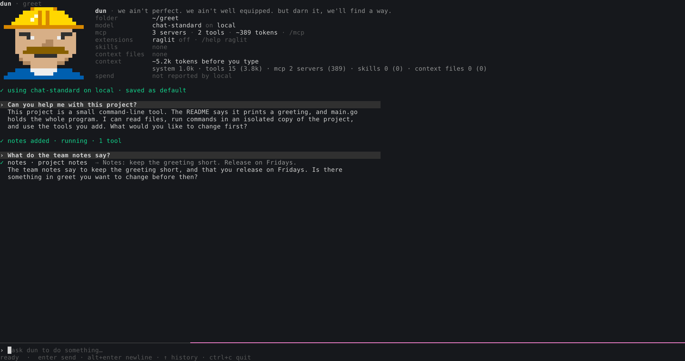

How it keeps going
A cheap model forgets, gives up early, and believes silence. Each of these is shipped behavior aimed at one of those failures.
It checks the requirements before it stops
In a --non-interactive run, before a turn that did work can end, the model lists each requirement the task states (paths, names, formats, values) and checks each against what it produced, by running it where it can. If one is not met and it can still work on it, it keeps working.
Interactive: no extra round, unless the plan still has open steps.
A plan that says what it is for
The plan tool's description leads with its purpose: the plan is kept outside the conversation, so cutting context does not cut it, and each turn starts with its open steps. Each step has a goal and a done_when.
No plan after 25 rounds, or 4 failures in a row: the model is made to write one. A plan with no step moved for 30 rounds: it is made to update it (at most 3 times a turn).
Background jobs that report back
A long command becomes a background job. dun tells the model when the job finishes, so it does not sleep or poll. A command the model is waiting on is cut short when another job finishes, so the news arrives at once.
Loud, not silent
A command that printed nothing returns (no output; exit 0), not an empty string a model reads as a pass. A file edit whose text matches only when whitespace is ignored is applied, and the result says so.
Recap that leaves a trail
The model can replace its own churn with a summary. Each removed call stays as one line: the tool, its arguments, the outcome, the result size, and the file that holds the full result. The model can read that file again.
Sub-agents with their own context
Work that costs a lot of context for a small answer, such as reading a long log, goes to a sub-agent. It has the same tools, spends its own context, and returns the answer; what it read never enters the parent's context. It can run in its own worktree or container.
The evidence, and its limits
The limits are part of the claim. Read them with the numbers.
Every number here: GLM-5.3-Flash at low effort, through Fireworks · Terminal-Bench 2.1 · run with Harbor
The 15 tasks where dun ran longest
9 rated hard and 6 rated medium by Terminal-Bench. Pass rate on these 15 tasks:
Mid-pack among the public harnesses for this model, not the top.
The model started to plan
On long tasks, before and after the plan tool's description was rewritten to lead with its purpose. Trials in which the model used the plan without being forced:
0/72 → 26/30
First passes on very hard tasks
dun's first passes on dna-assembly and on path-tracing-reverse, which has a 3% pass rate on the leaderboard.
What this does not show
- Across the whole suite, the gain is within noise: 18 → 19 of 37 matched tasks, one attempt each.
- dun is not yet frugal with tokens: it spends about 3× the tokens per passed task of the leading harnesses.
- Some tasks are bound by the model, not the harness (vision, crypto math). A harness does not fix those.
- The 15 tasks were picked as the ones where dun had run longest (60+ rounds).
Install and run
Linux and macOS, amd64 and arm64.
$ curl -fsSL https://dun.iodesystems.com/install.sh | sh
Installs the latest release to ~/.local/bin after checking its sha256. Read the script.
Extract and put dun on your PATH. Each file's sha256 is in dun-manifest.json.
$ git clone https://github.com/IodeSystems/dun $ cd dun && make install # needs Go; installs ~/.local/bin/dun
A source build updates from its checkout. /upgrade --channel=release in dun replaces it with the latest release.
Then dun --setup to log in to a model, and dun in your project.

Also built for long sessions
Hours-long sessions on hosted, gateway or local models.
Zero jank
Redraws are capped at 30 a second and each block's layout is cached, so a streamed reply does not re-lay-out the scrollback for every token. /perf shows frame times and the message behind the slowest frame.
Zero bounce
What you are reading stays where it is. Blocks fold only once they are wholly above the view, and new output never moves a scrolled-up reader.
Extended metrics
/usage shows cache hits by kind of request and whether a miss was dun's (it rewrote the prompt, and why) or the server's. Spend and key budget as the gateway reports them. dun --usage reads a per-response log kept in ~/.dun/stats.
Context kept small
Output over 20,000 characters is cut, the whole kept in a file. MCP tools can run scripted, their schemas out of every request. A tool is listed only once it has a use.
Works with any other harness
Another agent can hand dun the long, cheap part of a job: dun mcp serves dun's sessions over MCP (claude mcp add dun -- dun mcp). Anything with a shell can join in too: dun msg --name b listens and prints FROM>MESSAGE lines, dun msg b "…" sends, and sessions reach listeners with dun_msg.
Compared: tokens and features
An earlier, separate measurement: the same model for every agent (Qwen 27B on llama.cpp), dun v0.1.8. Each benchmark page has the setup, the prompt, every run, and the scripts.
| dun | Claude Code | opencode | pi | |
|---|---|---|---|---|
| tokens · lower is better | ||||
| Before you typefirst request, no MCP servers | 2,911 | 11,366 | 13,704 | 1,783 |
| Before you type, with MCPPlaywright + poly-lsp | 4,909scripted | 11,643tool search | 19,959 | 2,448codemode |
| A whole taskfind a CI error in a 218 KB log, fix it; median | 26.3k8 of 8 done | 68.2k3 of 3 | 87.7k3 of 3 | 16.4k3 of 3 |
| features | ||||
| Any OpenAI-compatible model, local included | ✓ | –Anthropic-format only | ✓ | ✓ |
| Open source | MIT | – | MIT | MIT |
| MCP schemas kept out of each request | ✓scripted | ✓tool search | – | ✓codemode |
| Model trims its own context mid-task | ✓recap | ? | ◐plugin | ◐extension API |
| Long output cut, whole kept in a file | ✓ | ✓ | ✓ | ◐MCP, codemode |
| Loop detection | ✓ | ? | ✓ | ? |
| Parallel sub-agents | ✓ | ✓ | ✓ | ◐extension |
| Sub-agent in its own worktree or container | ✓both | ✓worktree | ? | ? |
| Sessions survive closing the terminal | ✓ | ✓ | ◐serve mode | ? |
| Resume from a browser or phone | ◐experimental | ✓ | ✓ | ? |
Scheduled messages and /loop | ✓ | ✓ | ◐plugin | ? |
| Thinking and every tool call on screen | ✓ | ◐collapsed by default | ✓ | ✓ |
✓ yes · ◐ partial, or by plugin or extension · – no · ? not found in its docs. Tokens measured 2026-10-27: dun v0.1.8, Claude Code 2.1.311, opencode 1.15.3, pi 1.4.0. Features checked 2026-10-28 against each agent's docs (Claude Code 2.1.312, opencode 1.19.5, pi 1.4.0); sources for every cell. The task benchmark is short: no agent reached ten requests, so it does not show how a long session grows.